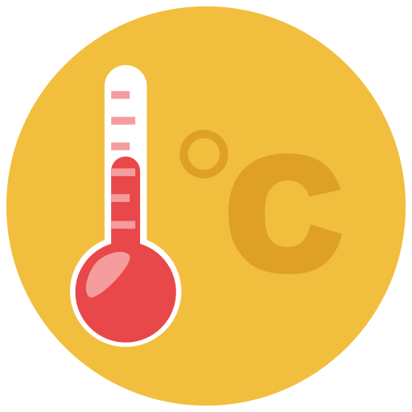

Menurut
detiknews.com hutan di Indonesia per tahun 2024 seluas 106,55 juta hektar, dan menurut
antaranews.com hutan di Indonesia per tahun 2025 seluas hanya 95,5 juta hektar. hanya dalam setahun
sekitar 9 juta hektar luasnya hutan sudah di alih fungsikan, jika tanpa adanya reboisasi, dalam
jangka
waktu yang pendek maupun panjang akan berdampak negatif untuk segala aspek, perubahan iklim
akan semakin drastis, kadar oksigen dalam udara semakin tipis, dan gangguan pernapasan.
Menurut
detiknews.com hutan di Indonesia per tahun 2024 seluas 106,55 juta hektar, dan menurut
antaranews.com hutan di Indonesia per tahun 2025 seluas hanya 95,5 juta hektar. hanya dalam setahun
sekitar 9 juta hektar luasnya hutan sudah di alih fungsikan, jika tanpa adanya reboisasi, dalam
jangka
waktu yang pendek maupun panjang akan berdampak negatif untuk segala aspek, perubahan iklim
akan semakin drastis, kadar oksigen dalam udara semakin tipis, dan gangguan pernapasan.
Perubahan iklim secara drastis merupakan tantangan global yang sudah nyata dampaknya,
seperti peningkatan suhu bumi, bencana alam, hingga penurunan kualitas udara menyebabkan
banyaknya kasus gangguan pernapasan. Data terbaru menurut Good Stats pada tahun 2023 kasus ISPA
(Infeksi Saluran Pernapasan Atas) tertinggi di jawa barat hingga 156.977 kasus. Salah satu penyebab
utama adalah penggundulan hutan yang terus berlangsung tanpa adanya reboisasi.
 Dalam kerangka SDG's, khususnya tujuan ke-13 tentang penanganan perubahan iklim,
penghijauan menjadi salah satu solusi nyata. Menanam pohon dengan ukuran yang kecilpun memiliki
dampak besar terhadap keberlangsungan hidup manusia dan lingkungan. Pohon tidak hanya
menghasilkan oksigen, tetapi juga menjaga keseimbangan alam serta melindungi keanekaragaman
hayati.
Dalam kerangka SDG's, khususnya tujuan ke-13 tentang penanganan perubahan iklim,
penghijauan menjadi salah satu solusi nyata. Menanam pohon dengan ukuran yang kecilpun memiliki
dampak besar terhadap keberlangsungan hidup manusia dan lingkungan. Pohon tidak hanya
menghasilkan oksigen, tetapi juga menjaga keseimbangan alam serta melindungi keanekaragaman
hayati.
 Tanpa kita sadari, dampak dari Langkah kecil yang kita laksanakan dapat menjadi Solusi juga
untuk tujuan ke-15 tentang menjaga kosistem darat. Dimana jika kita mulai dari lingkungan kecil
hingga hutan di reboisasikan, rumah para satwa-satwa liar juga pasti akan terjaga.
Tanpa kita sadari, dampak dari Langkah kecil yang kita laksanakan dapat menjadi Solusi juga
untuk tujuan ke-15 tentang menjaga kosistem darat. Dimana jika kita mulai dari lingkungan kecil
hingga hutan di reboisasikan, rumah para satwa-satwa liar juga pasti akan terjaga.
 Gerakan Go Green bisa dimulai dari langkah kecil tapi penuh arti, misalnya menanam bibit
pohon di halaman rumah, sekolah, kampus, atau lahan kosong di sekitar kita. Walau terlihat
sederhana,
jika dirawat hingga tumbuh besar, satu pohon dapat menyerap sekitar 22 kg CO₂ per tahun, Menurut
berbagai studi,
ruang hijau seperti pepohonan atau taman dapat menurunkan suhu
permukaan maupun udara hingga 5 °C. Area dengan radius 60 meter dari sebuah pohon bahkan
dapat mengalami penurunan suhu lebih dari 1,5 °C.
Gerakan Go Green bisa dimulai dari langkah kecil tapi penuh arti, misalnya menanam bibit
pohon di halaman rumah, sekolah, kampus, atau lahan kosong di sekitar kita. Walau terlihat
sederhana,
jika dirawat hingga tumbuh besar, satu pohon dapat menyerap sekitar 22 kg CO₂ per tahun, Menurut
berbagai studi,
ruang hijau seperti pepohonan atau taman dapat menurunkan suhu
permukaan maupun udara hingga 5 °C. Area dengan radius 60 meter dari sebuah pohon bahkan
dapat mengalami penurunan suhu lebih dari 1,5 °C.

Menurut tirto.com suhu di Indonesia terpanas bisa mencapai hampir 40 derajat celcius. Dengan suhu
tersebut, Kulit terasa panas dan kering,
Iritasi dan kemerahan, Kerusakan kulit: Sinar UV dapat menyebabkan kerusakan pada level sel kulit,
seperti kerusakan kolagen.
Penyakit kulit, hingga Risiko kanker kulit yang beresiko terjadi pada beberapa kelompok, seperti
orang dengan kulit cerah. Maka dari itu, penanaman pohon bukan sekedar pengurangan kadar CO₂ tetapi
dapat mengurangi suhu bumi dan membuat bumi semakin ramah di huni manusia.